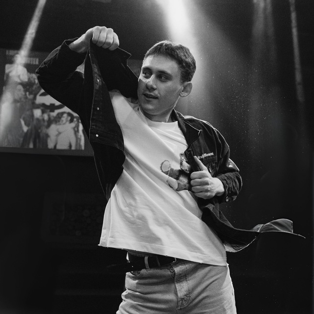

Junior Product Designer — создаю продукты от генерации деловой идеи до получения готового прототипа
Выпускник РАНХиГС. Разработал прототип голосового AI-ассистента для Simple Wine, участвовал в проектной деятельности, создавал интерактивные HTML-проекты с нуля. Ищу возможность развивать свои навыки и вывести их на следующий уровень.

Закончил РАНХиГС по направлению «Менеджмент — управление малым и средним бизнесом». Во время учёбы активно участвовал в проектной деятельности: решал прикладные задачи по благоустройству городских территорий и проектированию комплексной инфраструктуры для муниципальных администраций и коммерческих партнёров. Этот опыт научил меня системно декомпозировать задачи любого масштаба.
Свой первый серьёзный опыт в B2C-продажах получил в компании BECKER, занимающейся производством кухонных гарнитуров премиум-сегмента. Вёл клиентов на протяжении всего жизненного цикла сделки: от выявления глубинных потребностей на этапе первого контакта до трёхмерного моделирования индивидуального дизайн-проекта в специализированной САПР-программе, отработки сложных возражений и подписания контракта. Заключил более 90 договоров со средним чеком около 600 000 ₽. Практика прямых продаж научила меня гибко адаптироваться к индивидуальным запросам пользователей, детально понимать боли клиентов и оперировать измеримой ценностью при разработке решений.
В дипломной работе разработал голосового AI-ассистента для компании Simple Wine — от архитектуры до рабочего прототипа. Стек: Python, Vosk (распознавание речи), Yandex GPT (генерация ответов), Yandex TTS (синтез голоса). Ассистент определяет клиента, проверяет уровень лояльности и подбирает вино под запрос в реальном времени.
Также активно занимаюсь разработкой интерактивных HTML-продуктов с нуля. Некоторые из моих последних проектов: браузерный детектив с нелинейным сюжетом, прототип мобильного интерфейса с полноценной анимацией и интерактивные презентации. Всё это custom, без использования заготовленных фреймворков — я считаю это лучшим способом проверять продуктовые идеи и показывать решения вживую, а не в виде статичных макетов.
Убежден: будущее за теми, кто осваивает новые инструменты раньше, чем они становятся индустриальным стандартом. В каждом проекте я намеренно пробую новый технологический стек или формат — это не просто хобби, это осознанная рабочая практика. Мне комфортно работать в динамичной среде, требующей гибкости, непрерывного роста и постоянного саморазвития.
Пользовательский опыт, прототипирование, CJM, логика интерфейсов — от задачи до кликабельного решения.
Excel, финансовый анализ, работа с метриками. Принятие решений на основе данных, а не ощущений.
Vosk ASR, Yandex GPT, TTS, PyAudio. Разработка AI-решений под конкретные бизнес-задачи.
Полный цикл продукта: бриф, гипотезы, roadmap, валидация. Понимание, зачем продукт существует.
HTML, CSS, JavaScript без использования заготовленных внешних фреймворков.
Bitrix24, клиентские базы, документооборот. Понимание операционных процессов изнутри.
Unreal Engine, Unity, Blender — проектирование механик как способ думать о поведении пользователя.
Выявление потребностей, работа с возражениями, индивидуальные решения. 90+ закрытых сделок.
Адаптированный Mars/P&G кейс. Анализ конкурентной среды и потребительских инсайтов, разработка go-to-market стратегии с KPI и дорожной картой. Финальная презентация с интерактивной визуализацией данных.
Полноценная браузерная игра с нелинейным сюжетом, механикой поиска улик и системой подсказок. Написана с нуля на HTML/CSS/JS без фреймворков. Демонстрирует понимание вовлекающих UX-паттернов и геймдизайн-мышление.
Дипломный проект: голосовой ассистент «Юлия» для консультации по выбору вина и проверки уровня лояльности. Vosk — распознавание речи, Yandex GPT — генерация ответов, TTS — синтез голоса. Полный цикл: идея, архитектура, код, демо.
Открыт к обсуждению задач и возможностей.